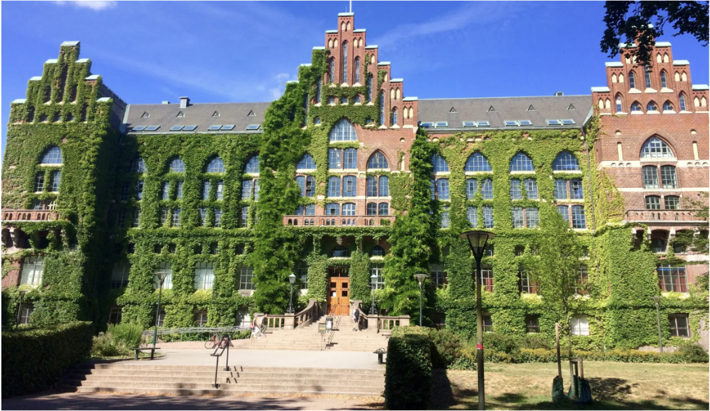
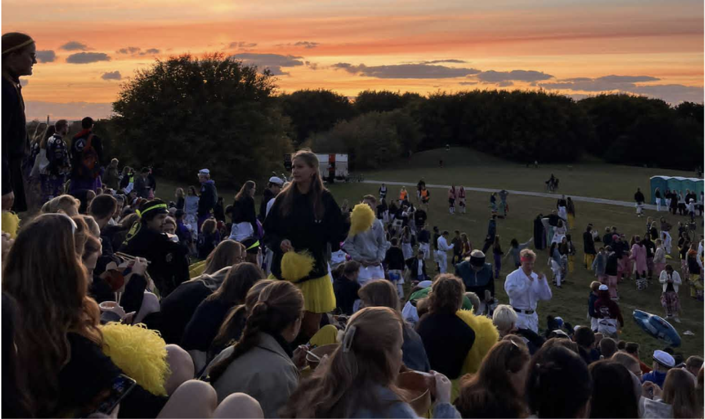
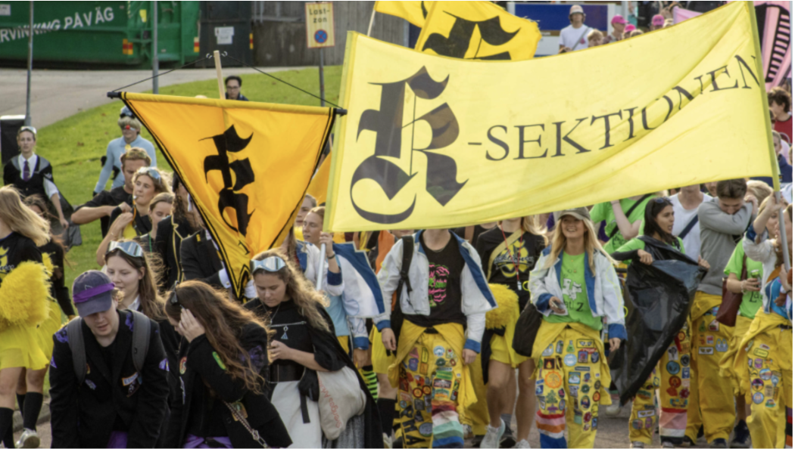
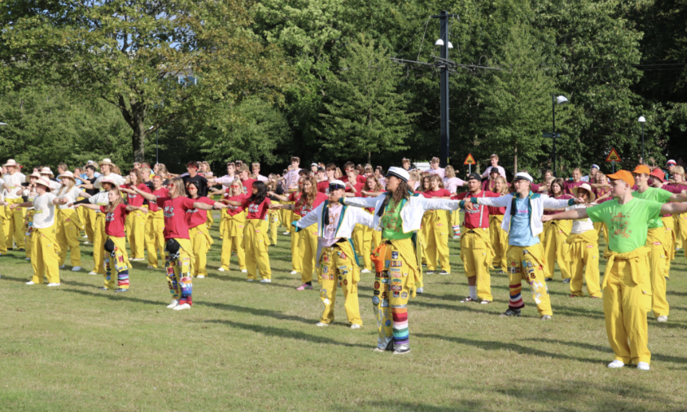

Varmt välkomna till Lund 20-23 november!


Vad är Bioteknikdagarna?
Bioteknikdagarna, som ofta förkortas BTD, är ett event för bioteknikstudenterna i Sverige. Det arrangeras
årligen på något
av lärosätena där utbildningen finns, vilket alltså är i
Uppsala, Linköping, Umeå, Göteborg, Stockholm eller Lund. I år är det Lunds tur!
Under dagarna bjuds totalt 180 studenter in till inspirerande föreläsningar, studiebesök, workshops och en
arbetsmarknadsmässa,
främst inom bioteknik men även andra naturvetenskapliga områden.
Det ges möjlighet att knyta kontakter med företag och på så vis få en insikt i vad man kan göra som
biotekniker men också träffa studenter från de andra lärosätena. Dessutom händer det mycket roligt under
kvällarna där man får chansen att ta
del av varandras studentliv och dess traditioner.
Lund och LTH
Lund är en av Sveriges äldsta städer och har varit ett centrum för lärande och kultur i över tusen år. Staden är välkänd för sitt rika studentliv, sina historiska byggnader och den varma gemenskapen bland studenterna.
Lunds Tekniska Högskola (LTH) är en del av Lunds universitet och ett av landets främsta lärosäten för ingenjörsutbildningar. Här kombineras tradition med innovation, och samarbeten med både forskning och näringsliv är en självklar del av utbildningen.
K-sektionen vid LTH samlar studenter som läser kemiteknik och bioteknik, och står i år som värd för Bioteknikdagarna. Sektionen är känd för sitt starka engagemang, sin sammanhållning och sina många traditioner – något som gör att årets BTD i Lund lovar att bli något alldeles extra!


Sponsorer & Samarbetspartners
Är du naturvetare eller ingenjör och vill vara med och bekämpa brott?
Nationellt forensiskt centrum, NFC, är en avdelning i Polismyndigheten. I nära samverkan med utredningsverksamheten leder, utvecklar och utför vi forensiskt arbete för en framgångsrik brottsbekämpning. Vi verkar inom området informationsteknik, biologiska spår, kemi och teknik samt droganalys. Vi ansvarar för hela den forensiska processen inom polisen, från kriminaltekniska platsundersökningar, laborativ verksamhet och it-forensik till forensiska expertutlåtanden i brottmål. I uppdraget ingår också att bedriva strategisk forskning och utveckling för att framtidssäkra polisens forensiska förmåga. Det gör vi i nära samarbete med såväl Nationella operativa avdelningen, Noa, och polisregionerna, som med externa samarbetspartners både i Sverige och utomlands. Vi agerar också expertstöd och bedriver utbildning. Vi är drygt 850 medarbetare på flertalet driftställen, från Umeå i norr till Malmö i söder. Vårt största laboratorium och vårt avdelningskansli finns i Linköping.
Starta ditt liv som ingenjör med oss
Sveriges Ingenjörer är ett fackförbund för dig som studerar till eller arbetar som ingenjör. Vi stöttar dig redan under studietiden och förbereder dig för din framtida karriär som ingenjör.
För endast 15:-/mån får du förmånliga försäkringar, tillgång till stipendier, ett oslagbart nätverk och rådgivning. Du får även tillgång till Ny Tekniks digitala premiumtjänst, där du kan läsa om det senaste inom innovation, teknik och entreprenörskap.
Medan du fokuserar på dina studier, fokuserar vi på dig. Bli medlem idag!
Per Wahlund är en före detta lektor i beräkningsvetenskap vid Uppsala universitet.
Efter sin pension valde Per att avskilja 500 000 kronor för att bilda Per Wahlunds stiftelse.
Stiftelsen ämnar att stödja projekt drivna av studenter vid den teknisk-naturvetenskapliga fakulteten (Teknat) på Uppsala universitet med fokus på kultur- och utbildningsarrangemang.
Varje år delar stiftelsen ut cirka 35 000 kronor som ger möjlighet att anordna arrangemang med hög kvalitet.
Stiftelsen förvaltas av Uppsala teknolog- och naturvetarkår (UTN)
PolyPeptide är en av världens största oberoende kontraktstillverkare av terapeutiska peptider för läkemedel och kosmetika. PolyPeptide är representerade i Frankrike, Belgien, Indien, Sverige samt USA och sysselsätter ca 1 400 medarbetare. Koncernen är börsnoterad i Schweiz och tillverkar mer än en tredjedel av alla godkända peptidläkemedelssubstanser i världen.
På PolyPeptide hittar du en kultur formad av människor som bryr sig – om sitt arbete, sina kollegor och skillnaden de gör. Vi arbetar nära över team och gränser, och kombinerar olika perspektiv i en öppen och samarbetande miljö. Det som för oss samman är en gemensam tro på värdet av vårt arbete och den påverkan det har på andra. Den känslan av mening är något vi alla bidrar till och växer av varje dag.